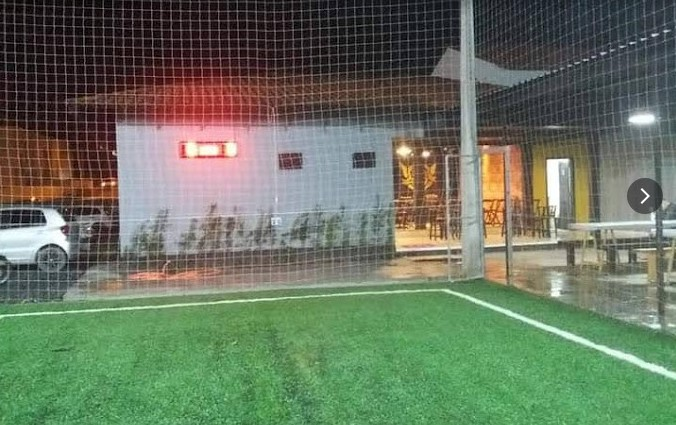
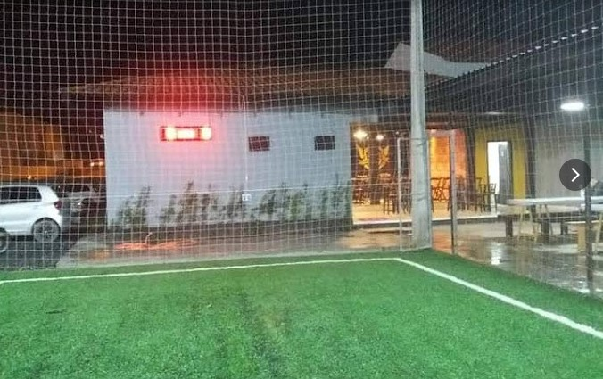

Nesta página você encontrará a percepção paisagista do Bairro Dom Joaquim, juntamente com a análise acerca da visão de Jane Jacobs e Jan Gehl, destacando as ruas que são ou não movimentadas, e mostrando seus principais elementos.
Nem todas as calçadas são boas para transação
Grande fluxo de carros
Faz encontro com a BR 486 onde tem lojas
grande fluxo de carros
Loteamentos
Se encontra com a rua joao perters que tem um supermercado
faz volta no bairro Dom Joaquim

no começo da rua não tem calçadas muito boas
muitos terrenos
grande fluxo de carros
loteamentos
Por serem ruas com maior fluxo deveriam ter mais locais para entretenimento e calçadas mais largas . Jane jacobs diz que o uso das calçadas são importantes para a interação das pessoas, já Jean Gehl diz que espaços públicos convidativos que as pessoas possam usufruir são importantes porque fortalecem o senso de comunidade e contribuem para a qualidade de vida das pessoas.
Nessas ruas as calçadas não são tão boas para a circulação e não tem quase nenhum lugar para entretenimento. Porém, podemos ver também pontos positivos como janelas voltadas para as ruas, uma boa iluminação e plantas nas casas, o que contribui para que a casa fique mais fresca.
Rua Augusta Hort
Rua Irmã Joséfina
Rua Beira Rio
Rua Augusta Hort
Rua Irmã Joséfina

Rua Beira Rio
Rua Augusta Hort
Rua Irmã Joséfina
Rua Beira Rio
Golden Soccer futebol society e bar
 

Calçadas estreitas •
Casas distantes umas das outras •
Calçadas ruins para circulação de pessoas
terrenos com falta de limpeza
estrada de terra
Sem calçadas e não oferece acesso

Paisagem não convidativa e acolhedora
Estrada de terra e pouca iluminação
Jane Jacobs diz que “se as ruas parecerem interessantes, a cidade também parecerá”, podemos afirmar que essas ruas não parecem nenhum pouco interessantes. Além de ter pouca iluminação, locais de entretenimento, essas ruas não tem ou quase não tem calçadas.
Jean também diz que poucas pessoas em uma rua estreita de uma cidadezinha podem com facilidade apresentar uma imagem viva e animada pois oque importa não são os números, multidões ou o tamanho da cidade e sim a sensação de que o espaço da cidade é convidativo e popular, mas em relação a essas ruas, elas não são convidativas. Por essa razão o fluxo delas não é nada significativo em relação as outras ruas.
As estradas dessas ruas são de terra o que prejudica a circulação de pedestres e de carros. Também podemos ver a falta de postes de luz, o que diminui a sensação de segurança das pessoas.